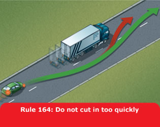

2. Overtaking (162 to 169)
162
Before overtaking you should make sure
- the road is sufficiently clear ahead
- road users are not beginning to overtake you
- there is a suitable gap in front of the road user you plan to
overtake.
163
Overtake only when it is safe and legal to do so.
You should
- not get too close to the vehicle you intend to overtake
- use your mirrors, signal when it is safe to do so, take a quick
sideways glance if necessary into the blind spot area and then
start to move out
- not assume that you can simply follow a vehicle ahead which is
overtaking; there may only be enough room for one vehicle
- move quickly past the vehicle you are overtaking, once you have
started to overtake. Allow plenty of room. Move back to the left as
soon as you can but do not cut in
- take extra care at night and in poor visibility when it is harder
to judge speed and distance
- give way to oncoming vehicles before passing parked vehicles or
other obstructions on your side of the road
- only overtake on the left if the vehicle in front is signalling
to turn right, and there is room to do so
- stay in your lane if traffic is moving slowly in queues. If the
queue on your right is moving more slowly than you are, you may
pass on the left
- give motorcyclists, cyclists and horse riders at least as much
room as you would when overtaking a car (see Rules 211 to 213) and
214 to 215).
Remember: Mirrors – Signal – Manoeuvre

164
Large vehicles. Overtaking these is more difficult.
You should
- drop back. This will increase your ability to see ahead and
should allow the driver of the large vehicle to see you in their
mirrors. Getting too close to large vehicles, including
agricultural vehicles such as a tractor with a trailer or other
fixed equipment, will obscure your view of the road ahead and there
may be another slow-moving vehicle in front
- make sure that you have enough room to complete your overtaking
manoeuvre before committing yourself. It takes longer to pass a
large vehicle. If in doubt do not overtake
- not assume you can follow a vehicle ahead which is overtaking a
long vehicle. If a problem develops, they may abort overtaking and
pull back in.

165
You MUST NOT overtake
- if you would have to cross or straddle double white lines with a
solid line nearest to you (but see Rule 129)
- if you would have to enter an area designed to divide traffic, if
it is surrounded by a solid white line
- the nearest vehicle to a pedestrian crossing, especially when it
has stopped to let pedestrians cross
- if you would have to enter a lane reserved for buses, trams or
cycles during its hours of operation
- after a ‘No Overtaking’ sign and until you pass a
sign cancelling the restriction.
Laws RTA 1988 sect 36, TSRGD regs 10, 22, 23 & 24,
ZPPPCRGD reg 24
166
DO NOT overtake if there is any doubt, or where you
cannot see far enough ahead to be sure it is safe. For example, when
you are approaching
- a corner or bend
- a hump bridge
- the brow of a hill.
167
DO NOT overtake where you might come into conflict
with other road users. For example
- approaching or at a road junction on either side of the road
- where the road narrows
- when approaching a school crossing patrol
- between the kerb and a bus or tram when it is at a stop
- where traffic is queuing at junctions or road works
- when you would force another road user to swerve or slow down
- at a level crossing
- when a road user is indicating right, even if you believe the
signal should have been cancelled. Do not take a risk; wait for the
signal to be cancelled
- stay behind if you are following a cyclist approaching a
roundabout or junction, and you intend to turn left
- when a tram is standing at a kerbside tram stop and there is no
clearly marked passing lane for other traffic.
168
Being overtaken. If a driver is trying to overtake
you, maintain a steady course and speed, slowing down if necessary to
let the vehicle pass. Never obstruct drivers who wish to pass.
Speeding up or driving unpredictably while someone is overtaking you
is dangerous. Drop back to maintain a two-second gap if someone
overtakes and pulls into the gap in front of you.
169
Do not hold up a long queue of traffic, especially if you are
driving a large or slow-moving vehicle. Check your mirrors
frequently, and if necessary, pull in where it is safe and let
traffic pass.